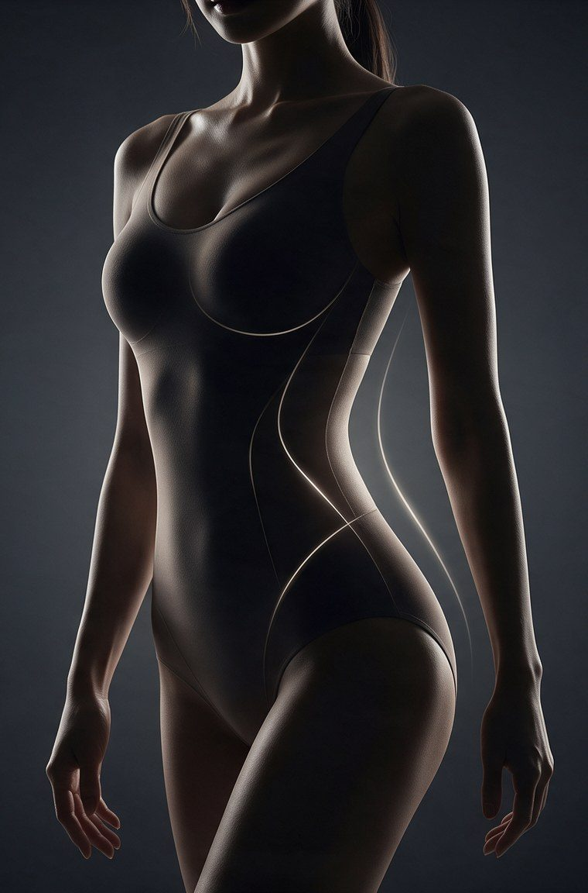

比起抽了多少cc，我更看重抽脂後的身形輪廓。所以我從不把腹部、手臂分開來看。

只瘦一個部位，
線條不會完整。
抽除、修飾、填補、重建。
美麗的體態，
從平滑的肌膚開始。
E-Lipo是朴炳春醫師研發的抽脂方法，分三個步驟進行：抽吸前先分離脂肪層，接著抽吸，最後將皮膚下方留下的脂肪均勻鋪平。
E-Lipo的E，代表Easy、Efficient、Elegant。
一開始，是減少脂肪的手術。之後發展為打造美麗體態的手術，如今則是連肌膚表面都保持柔軟平滑的手術。這一路累積的成果，就是E-Lipo。
抽脂後，肌膚表面依然平滑，才能在上面打造線條。我認為，這是身形雕塑的基本。

短時
大量抽脂的手術時間越長，麻醉負擔就越大。E-Lipo的設計，讓抽脂量再多，手術時間也不會拉長，同時減少麻醉負擔與組織損傷。
保護
減少對血管、神經與支撐皮膚組織的損傷。
平滑
要讓線條浮現，必須連皮膚下方的淺層脂肪也一併修飾。同時為了避免表面出現凹凸，最後還會將剩下的脂肪均勻鋪平。
手術流程
- 分離抽脂前先溫和地分離脂肪層，保護血管、神經與支撐組織。
- 抽吸只在需要的地方，均勻抽出需要的量。
- 均勻化將皮膚下方留下的薄層脂肪均勻鋪平，避免表面凹凸。
以SAFE Lipo概念（2016年）為起點，依韓國人體型重新設計設備組合、操作順序、抽脂量標準與疼痛管理。
使用設備：VASER、Lipomatic、MicroAire PAL（需要緊緻皮膚時併用Renuvion）
 查看專利證書
查看專利證書
手術室裡的一個問題，
成了一項專利。
能不能更均勻、更精準？帶著這個問題，我親自研發了抽脂裝置及其驅動方法，並於2026年在韓國取得專利。
- 名稱
- 抽脂裝置及其驅動方法
- 註冊號
- 第10-3019704號
- 申請號
- 第10-2025-0185529號
- 申請日
- 2025年11月28日
- 註冊日
- 2026年9月10日
- 發明人
- 朴炳春
依專利證書記載內容。發明人為朴炳春醫師，專利權人為韓國法人。本專利為抽脂裝置及其驅動方法之專利，並非E-Lipo手術整體之專利。
朴炳春 醫師
Byongchoon Park, M.D.
朴炳春醫師是首爾清潭洞LaPrin診所院長，專注於抽脂與身形雕塑手術。他親自研發了抽脂方法（E-Lipo系統）與抽脂裝置，現在也將這套方法傳授給海外醫師。
「抽脂這條路，我走了25年。做出了方法，做出了裝置，現在把它教給別人。」
- 臨床經驗
- 25年
- 系統研發
- E-Lipo
- 抽脂裝置發明
- 專利
經歷
- LaPrin診所（整形外科、美容皮膚科、抗老化）院長
- E-Lipo Academy 創辦人暨主任講師為海外醫師進行手術教學
- 延世大學 畢業
- 曾任首爾兩家Lamar診所院長
- 韓國專利 第10-3019704號「抽脂裝置及其驅動方法」發明人
所屬學會
大韓美容外科學會、大韓肥胖學會、大韓脂肪整形學會、大韓幹細胞學會、大韓醫學雷射學會 正式會員
主要診療
抽脂、大量抽脂、身形線條矯正、自體脂肪移植、腹部整形、胸部手術

為患者做的手術，
就是我教給醫師的手術。
來自海外的醫師，專程到首爾學習這套方法。
醫師專屬 E-Lipo Academy常見問題
診察前大家最常問的問題。
朴炳春醫師做哪些手術？
抽脂與身形雕塑手術。包括腹部、側腰、背部、手臂、大腿抽脂與大量抽脂，將抽出的脂肪移植到胸部、臀部、胯部的自體脂肪移植，以及光靠脂肪做不到時的腹部整形、胸部手術與身體提拉。醫師會先看整體線條再規劃，適合哪種手術要在診察後決定。
E-Lipo和一般抽脂有什麼不同？
進行的流程不同。一般抽脂是注入腫脹液後直接抽吸。E-Lipo在抽吸前先分離脂肪層，抽吸後再把皮膚下方留下的脂肪均勻鋪平。這個順序是為了讓肌膚表面保持平滑，實際結果因個人狀況而異。
是由院長親自診察和手術嗎？
是的。LaPrin診所是院長一人執業的診所，來院時由朴炳春醫師親自診察，手術也由他親自進行。他會先看整體，只說明您需要的步驟。
麻醉方式是什麼？手術當天可以回去嗎？
抽脂大多採用靜脈鎮靜麻醉或局部（腫脹）麻醉，並與麻醉科合作進行。大多數抽脂患者手術當天即可返回飯店。實際情況依手術範圍而定，諮詢時會事先說明。
從海外來需要在首爾停留多久？
海外患者的建議是：輕度日常活動從術後2～3天開始，在首爾停留7～10天。LaPrin診所為韓國登記之外國患者招攬醫療機構。停留天數會依手術範圍與恢復狀況調整，諮詢時會一起安排。
如何預約諮詢？
透過LINE或WhatsApp預約後來院，由院長親自診察。診所位於清潭站8號出口的Myeongbo大樓，週日與國定假日休診。手術計畫會依診察結果與個人狀況而定。

- 門診時間
- 週一、週二、週三、週五 10:00～19:00週四 10:00～21:00週六 10:00～16:00週日、國定假日 休診
- 麻醉
- 抽脂大多採用靜脈鎮靜麻醉或局部（腫脹）麻醉，並與麻醉科合作進行。
- 返回住處
- 大多數抽脂患者手術當天即可返回飯店。實際情況依手術範圍而定，諮詢時會事先說明。
- 海外患者
- LaPrin診所為韓國登記之外國患者招攬醫療機構。
- 地址
- 首爾特別市 江南區 三成路709 Myeongbo大樓1樓～地下1樓（清潭站8號出口）
※ 手術結果與恢復期間，會因個人身體狀況與手術範圍而有差異。
※ 所有手術都可能出現出血、感染、疤痕、感覺異常、左右不對稱、皮膚凹凸不平、血腫、血清腫、血栓等併發症。